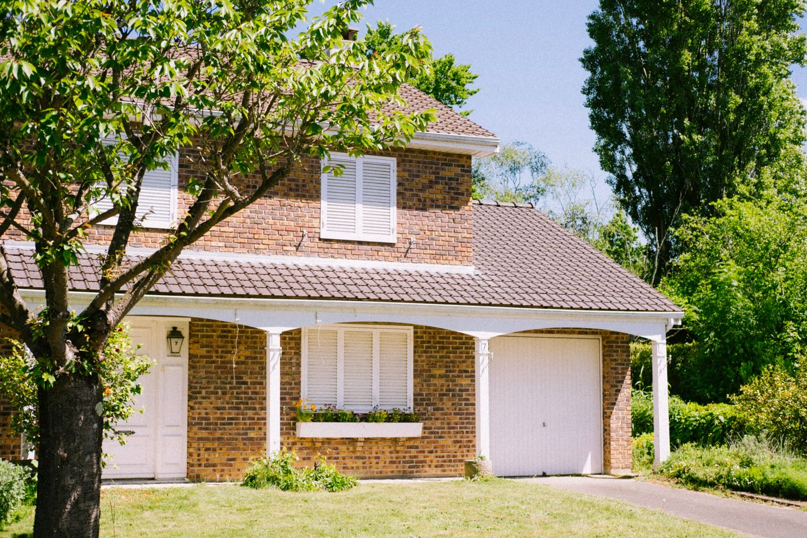
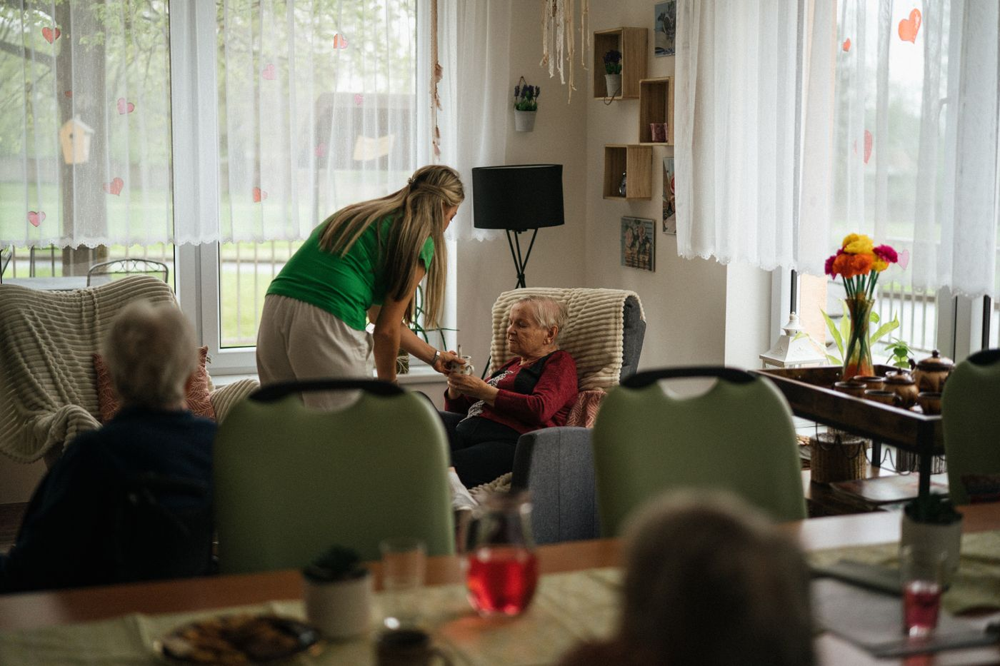
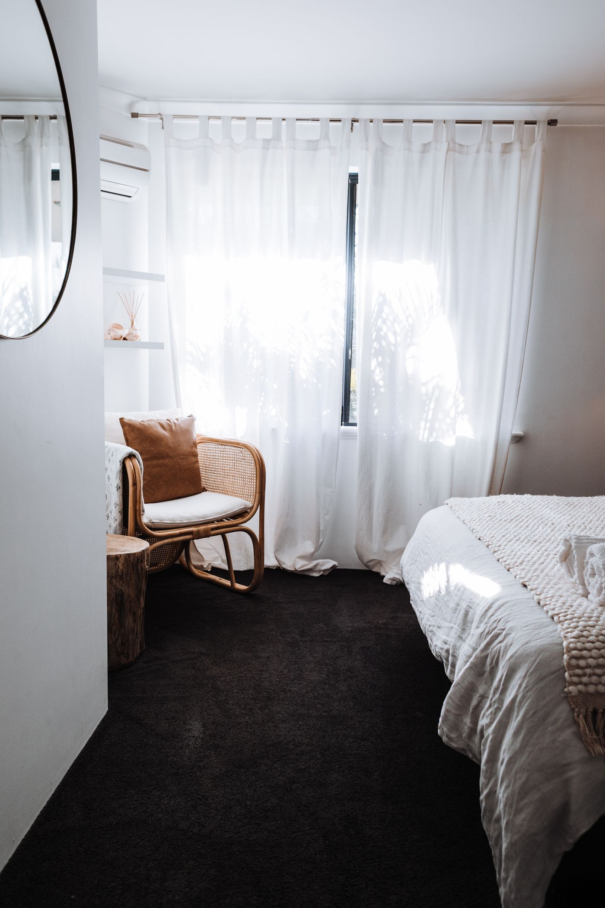

Respeto
Cada persona conserva sus gustos, sus tiempos y su historia.
Inicio · Nosotros
Una residencia de larga estadía con trato cercano, equipo interdisciplinario y una rutina con sentido.


La Luz Divina nació hace más de cuatro décadas [año de fundación / quién la fundó] con una idea simple: que las personas mayores vivan esta etapa acompañadas, cuidadas y con dignidad, en un lugar que se sienta como casa.
Hoy somos una residencia de larga estadía con un equipo interdisciplinario. Trabajamos con PAMI y con familias particulares, y mantenemos lo que nos distingue desde el principio: el trato cercano, el conocimiento de cada residente por su nombre y su historia, y una rutina con sentido.
Cada persona conserva sus gustos, sus tiempos y su historia.
Atención de salud todos los días, con seguimiento personalizado.
Una casa viva, con cocina propia, actividades y lugar para la familia.
Las familias saben siempre cómo está su ser querido.
Espacios pensados para la comodidad y la seguridad de cada residente.

[Luminosas, individuales o compartidas]

Donde compartimos cada comida.

Sol, aire libre y visitas.

Comida casera todos los días.
[Testimonio real de una familia, 2 o 3 líneas]
[Testimonio real de una familia, 2 o 3 líneas]
[Testimonio real de una familia, 2 o 3 líneas]
Coordinamos una visita sin compromiso para que la familia vea la residencia en persona.